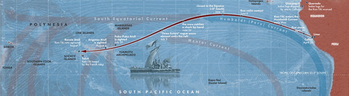

On this day in 1947, zoologist and ethnographer Thor Heyerdahl set out, with a hearty crew on a balsa-log raft from the Pacific coast of Peru, bound for Polynesia. Their transpacific journey captured the popular imagination of the day, with Heyerdahl, who had studied ancient Indigenous people of South America and Polynesia, penning a 1948 book on the expedition that has since been translated into more than 70 languages and has sold more than 50 million copies.
The Kon-Tiki Expedition: By Raft Across the South Seas (later reprinted as Kon-Tiki: Across the Pacific in a Raft) told the story of the precarious, four-month journey, which was envisioned as an illustration of Heyerdahl’s hypothesis that the first humans to populate the Polynesian archipelagos of the South Pacific sailed there from South America. The problem with that hypothesis? It didn’t mesh with actual evidence, even as the Kon-Tiki set sail on April 28 nearly 80 years ago.

THE KON-TIKI'S JOURNEY: Although the underlying logic was flawed, the crew of the Kon-Tiki did make it from Peru to Polynesia, after a long, arduous journey using only rudimentary navigation and materials. Image by Simeon Netchev.
Heyerdahl and his compatriots—an artist, a sociologist, a couple radio experts, and an engineer—built the 45’x18’ balsa-log raft using only materials native to South America using rudimentary tools and technologies. Although the Kon-Tiki, named for an older epithet of the Inca creator deity Viracocha, had a mast, sail, and a large steering oar, the plan was to submit to the mercy of currents and winds to hit their target of Polynesia. The crew also brought along some modern conveniences, such as a radio, metal knives, watches, and charts, mainly for safety purposes as they braved rogue waves, whale sharks, and a near constant rain of flying fish.
Archaeological, genetic, and cultural evidence instead supports the idea that Polynesian islands were originally populated by seafarers who originated in Southeast Asia, the broadly accepted Austronesian expansion model. The scientific case for this model has only strengthened since the Kon-Tiki ran aground on a reef off of the Raroia atoll in the Tuamotus Islands of French Polynesia, after a voyage of more than 4,300 miles and 100 days across the wide Pacific Ocean.
Read more: “An Archaeological Reckoning”
In addition to being pseudoscientific, Heyerdahl’s hypothesis was racially controversial, hinging on the idea that cultures west of Polynesia were far too primitive to sail eastward and against prevailing winds. Instead, the Norwegian scientist proposed, Polynesia was likely peopled by a race of “white bearded men” descended from ancestors that hailed from the Middle East who had sailed across Earth’s other great oceanic expanse, the Atlantic, to land in South and Central America.
In addition to being debunked by data, this Eurocentric view was consigned to the dustbin of science history by later expeditions by the Polynesian crew of the Hōkūleʻa, a traditionally designed and built double-hulled canoe that sailed from Hawaiʻi to Tahiti in 1976. Instead of floating passively on ocean currents, this vessel was able to navigate watery expanses as the first Polynesian settlers would have in prehistory.
I, like many other ocean loving adolescents, read Kon-Tiki with wide-eyed amazement at the trials and tribulations of the sailors aboard that craft. Only later did I learn that the scientific undergirding of their expedition was dubious, to put it charitably. But still, at least Heyerdahl and his crew had the conviction to test their shaky hypothesis by risking their own lives. I’ll take that brand of committed pseudoscience over the strains of armchair theorists “doing their own research” any day. 
Enjoying Nautilus? Subscribe to our free newsletter.
Lead image: Bahnfrend